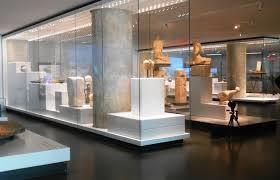
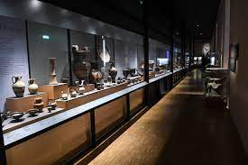
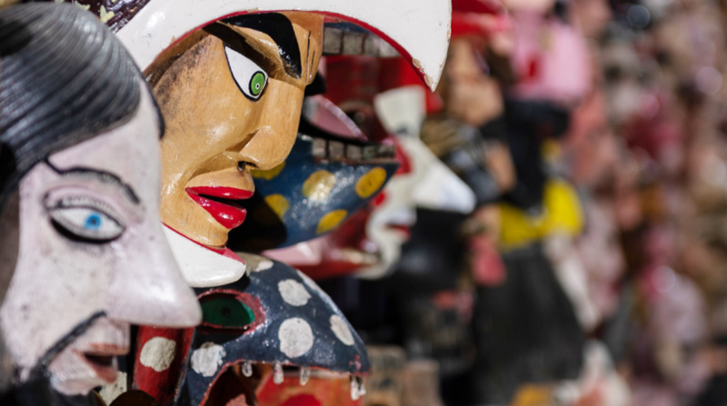

Musée des beaux arts de Marseille
Le musée d'Histoire de Marseille est un musée consacré à l'histoire de la ville de Marseille. Fondé en 1983, il a été entièrement rénové et a rouvert le 14 septembre 2013. Installé dans le Centre Bourse, à proximité du Vieux-Port. Le musée d'histoire de Marseille abrite le site du Port antique, une exposition permanente de 3 500 m2, un espace d'exposition temporaire, un centre de documentation et un auditorium, ce qui en fait le plus important musée d'histoire urbaine en France3. 2, RUE HENRI-BARBUSSE 13001 MARSEILLE TÉL: 04 91 55 36 00

Horaires
Ouvert du mardi au dimanche de 9h à 18h
Fermeture hebdomadaire le lundi, sauf les lundis de Pâques et de Pentecôte
Fermeture les jours suivants : 1er janvier, 1er mai, 1er et 11 novembre et le 25 décembre.
Fermeture de la billetterie 30 minutes avant la fermeture du musée.
Adresse
2, rue de la Charité
13002 Marseille
Contact
Tél. : 04 91 14 58 46
mail : museearcheologie@marseille.fr


Le musée d’archéologie méditerranéenne, qui se trouve au premier étage de la Vieille Charité à Marseille, regroupe deux départements : les antiquités égyptiennes et les antiquités classiques. Notre Musée à ouvert ses portes en 1995
Horaires
Ouvert du mardi au dimanche de 9h à 18h
Fermeture hebdomadaire le lundi, sauf les
lundis de Pâques et de Pentecôte.
Fermeture les jours suivants : 1er janvier, 1er
mai, 1er et 11 novembre et le 25 décembre.
Fermeture de la billetterie 30 minutes avant
la fermeture du musée.
Adresse
Centre de la Vieille Charité
2, rue de la Charité
13002 Marseille
Contact
Réservation
du lundi au vendredi, de 9h à 12h et de 14h à 16h. Tél : 04 91 14 58 86 Mail : maaoa@marseille.fr
du lundi au vendredi, de 9h à 12h et de 14h à 16h. Tél : 04 91 14 58 86 Mail : maaoa@marseille.fr
Les autres musée de Marseille
- Musée des beaux arts
- Musée d'Histoire de Marseille
- Centre de la vielle charite
- Musée d'archéologie Méditéranéenne
- Musée d'arts africains océaniens amérindiens
- Musée des arts décoratifs de la faience et de la mode
- Mémorial de la marseillaise
- Musée Grobet Labadie
- Musée des déportations
- Musée Cantini
- Musée des enfants
- Cabinet des monnaies et des médailles
- Musée de la moto
- Musée d'art contemporain
- Musée docks romains
- Museum d'histoire naturelle de Marseille